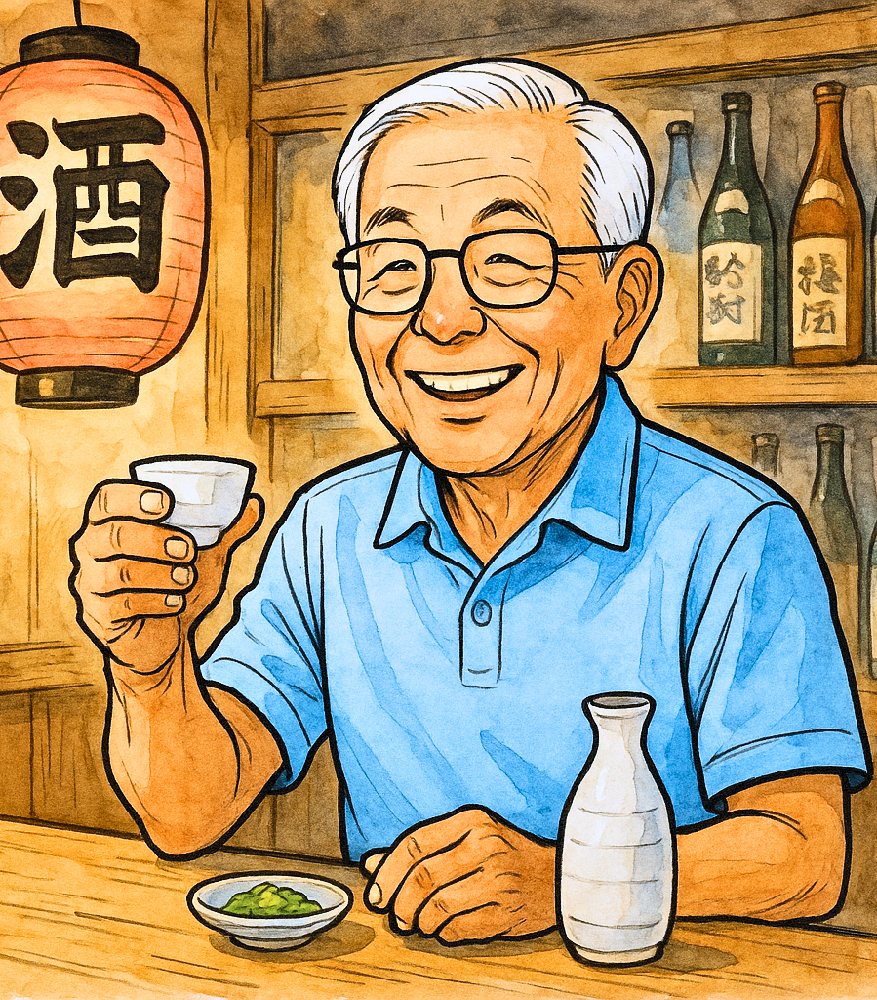

健康寿命を延ばす秘訣
日々の生活で実践できる、健康寿命を延ばすための簡単なヒントをご紹介します。
Story
私は1946年生まれ。間もなく80歳になります。
某精密機器メーカーで製品開発や商品企画、関連子会社の社長まで、ものづくりの現場を長く歩いてきました。退職後は八王子市や東京都の技術相談員・コーディネーターとして10年以上、東京のものづくり中小企業1,000社近い社長さんたちと一緒に課題を解決してきました。
そして今——AIと対話しながらコードを書く「バイブコーディング」に出会い、ゲームやWebサイトを次々とつくっています。このホームページも、AIと私の共同作品です。
新しい道具を面白がる気持ちさえあれば、いくつになっても「つくる側」でいられる。それを自分自身で証明していくのが、いまの私のテーマです。
製品開発・商品企画から子会社経営まで。技術と経営の両方を現場で経験。
技術相談員として10年以上、中小企業の社長さんたちと課題解決に取り組む。
AIとの対話でゲームやサイトを制作。作品はすべてWebで公開中。
Profile

ITエンジニア / 中小企業コンサルタント
戦後まもない日本で育ち、ものづくりの時代とともに歩む。
製品開発、商品企画、関連子会社の社長など、幅広い分野を担当。
コーディネーターとして10年以上、現場に密着。ものづくり中小企業1,000社近い社長さんと信頼関係を築く。
企業経営・マーケティング・技術課題のコンサルティングを続けながら、AIプログラミングで作品づくりに熱中。
Works
すべて実際に遊べます。クリックしてお試しください。
画像処理のしくみを遊びながら学べる実験ラボ＆クイズ。
学べるゲームヒントから金庫の暗証番号を解き明かす推理ゲーム。
推理ゲームトランプ52枚を使った二人対戦の記憶ゲーム。
対戦ゲームキーボード練習にぴったりのタイピングゲーム。
練習ツールシンプルで見やすい、暮らしに役立つタイマー。
便利ツール自作のブログシステム。書く場所も自分でつくる。
Webアプリ数独・ライツアウト・15パズルの3種類が遊べるパズル集。
パズルゲーム年号・年齢の早わかり、でか文字ボード、割り勘・消費税計算がひとつに。
便利ツールマインクラフト風の3Dワールド。地形探検やブロック建築が楽しめる。
3Dゲームソースコードはすべて GitHub（m3-kawasaki） で公開しています。
Consulting
個人事業主として、コンサルティング業務を行っています。お気軽にご相談ください。
子会社社長としての経営経験と、1,000社近い中小企業の現場を見てきた知見をもとに、経営課題の整理と打ち手をご一緒に考えます。
精密機器メーカーでの商品企画の経験を活かし、「売れるものづくり」の視点から企画・販路の課題をサポートします。
技術相談員として10年以上の実績。現場の技術課題からAI・デジタル活用の第一歩まで、わかる言葉でお手伝いします。
Blog
日々の生活で実践できる、健康寿命を延ばすための簡単なヒントをご紹介します。
スマートフォンやタブレットをもっと便利に使うための、初心者向けガイドです。
新しい仲間と出会い、地域活動に参加するメリットについて解説します。
画像の外側をクリックするか「×」ボタンで閉じます